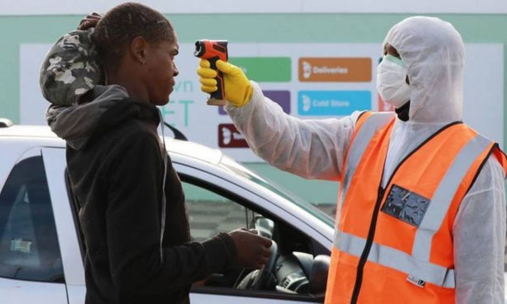

Será que não tem nada de bom?
Não é bem assim.

Que tal algumas boas notícias no Mundo
Máscaras com 97% de eficiência
Um grupo de pesquisadores da USP está desenvolvendo máscaras com até 97% de eficiência em reter o novo coronavírus. O projeto (respire!, coordenado pelo Centro de Inovação da USP, produzirá 1 milhão de unidades que serão distribuídas entre 8 mil profissionais da saúde em atividade nos hospitais. Para tanto, o projeto conta com a ajuda de cooperativas de costureiras que serão organizadas pela empresa Tecido Social. Segundo o professor Paulo Artaxo, do Instituto de Física da USP e um dos responsáveis pelo projeto, foi necessário testar máscaras de diferentes materiais para medir a eficiência de cada uma na retenção de partículas nanométricas. Afinal, o novo coronavírus tem 120 nanômetros em média – para fins de comparação, 1 nanômetro é um bilhão de vezes menor que 1 metro. O estudo foi feito a partir de um gerador de aerossóis capaz de produzir partículas do tamanho do coronavírus, associado a um sistema eletrônico de detecção.
Fonte: megacurioso.com.br(Fotos e artigo)
Canais de Veneza estão com águas mais limpas
A pandemia de coronavírus, através dos difíceis momentos que o mundo atravessa e ainda atravessará, já está nos nos fazendo rever muitos de nossos hábitos e determinações enquanto sociedade – e, pelo visto, ainda muito irá nos ensinar. A triste necessidade de entrarmos em quarentena revelou uma face inesperada: a redução da poluição em regiões indústrias como na China (com o fechamento das indústrias) e do impacto do turismo sobre o meio-ambiente em algumas das cidades mais visitadas do mundo. É o caso de Veneza que, por conta da terrível situação na Itália e da rigorosa quarentena que a cidade atravessa, viu suas águas, costumeiramente turvas e sujas, voltarem a se exibir cristalinas, com direito a peixes nadando nos canais.
Trata-se de um efeito indireto provocado pela redução total na circulação de gôndolas, barcos e lanchas que cruzavam os canais da cidade diariamente. A transparência nas águas é algo que muitos venezianos jamais viram – não por acaso as fotos do atual cenário da cidade, se por um lado provocam angústia pelo vazio total (porém fundamental) dos caminhos dessa que costuma ser uma das cidades mais visitadas do mundo, por outro espantam pela renovação das águas de Veneza.
Fonte: hypeness.com.br (Fotos e artigo)
Misteriosa queda de casos na África do Sul intriga especialistas
Nas últimas duas semanas, a África do Sul passou por uma situação excepcional que os médicos ainda não conseguem explicar: uma queda brusca e inesperada na taxa diária de novas infecções pelo novo coronavírus. Um sinal claro disso está nos hospitais do país, que tinham se preparado para receber um volume alto de pacientes. Os leitos e enfermarias estão prontos para eles, cirurgias não urgentes foram remarcadas e ambulâncias foram equipadas, enquanto equipes médicas vêm ensaiando protocolos sem parar e autoridades de saúde passam longas horas em reuniões pela internet preparando e ajustando seus planos de emergência. Sorriso e foto em crachá: hospitais tentam quebrar distância criada por máscaras Mas, até agora, contra a maioria das previsões, os hospitais sul-africanos permanecem tranquilos: o "tsunami" de infecções que muitos especialistas previram não se concretizou. Pelo menos, ainda não. "É meio estranho, misterioso. Ninguém sabe ao certo o que está acontecendo", diz Evan Shoul, especialista em doenças infecciosas de Johanesburgo.
Fonte: epoca.globo.com (Fotos e artigo)
Que tal algumas boas notícias no Brasil
Máscaras com 97% de eficiência
Um grupo de pesquisadores da USP está desenvolvendo máscaras com até 97% de eficiência em reter o novo coronavírus. O projeto (respire!, coordenado pelo Centro de Inovação da USP, produzirá 1 milhão de unidades que serão distribuídas entre 8 mil profissionais da saúde em atividade nos hospitais. Para tanto, o projeto conta com a ajuda de cooperativas de costureiras que serão organizadas pela empresa Tecido Social. Segundo o professor Paulo Artaxo, do Instituto de Física da USP e um dos responsáveis pelo projeto, foi necessário testar máscaras de diferentes materiais para medir a eficiência de cada uma na retenção de partículas nanométricas. Afinal, o novo coronavírus tem 120 nanômetros em média – para fins de comparação, 1 nanômetro é um bilhão de vezes menor que 1 metro. O estudo foi feito a partir de um gerador de aerossóis capaz de produzir partículas do tamanho do coronavírus, associado a um sistema eletrônico de detecção.
Fonte: megacurioso.com.br(Fotos e artigo)
Canais de Veneza estão com águas mais limpas
A pandemia de coronavírus, através dos difíceis momentos que o mundo atravessa e ainda atravessará, já está nos nos fazendo rever muitos de nossos hábitos e determinações enquanto sociedade – e, pelo visto, ainda muito irá nos ensinar. A triste necessidade de entrarmos em quarentena revelou uma face inesperada: a redução da poluição em regiões indústrias como na China (com o fechamento das indústrias) e do impacto do turismo sobre o meio-ambiente em algumas das cidades mais visitadas do mundo. É o caso de Veneza que, por conta da terrível situação na Itália e da rigorosa quarentena que a cidade atravessa, viu suas águas, costumeiramente turvas e sujas, voltarem a se exibir cristalinas, com direito a peixes nadando nos canais.
Trata-se de um efeito indireto provocado pela redução total na circulação de gôndolas, barcos e lanchas que cruzavam os canais da cidade diariamente. A transparência nas águas é algo que muitos venezianos jamais viram – não por acaso as fotos do atual cenário da cidade, se por um lado provocam angústia pelo vazio total (porém fundamental) dos caminhos dessa que costuma ser uma das cidades mais visitadas do mundo, por outro espantam pela renovação das águas de Veneza.
Fonte: hypeness.com.br (Fotos e artigo)
Misteriosa queda de casos na África do Sul intriga especialistas
Nas últimas duas semanas, a África do Sul passou por uma situação excepcional que os médicos ainda não conseguem explicar: uma queda brusca e inesperada na taxa diária de novas infecções pelo novo coronavírus. Um sinal claro disso está nos hospitais do país, que tinham se preparado para receber um volume alto de pacientes. Os leitos e enfermarias estão prontos para eles, cirurgias não urgentes foram remarcadas e ambulâncias foram equipadas, enquanto equipes médicas vêm ensaiando protocolos sem parar e autoridades de saúde passam longas horas em reuniões pela internet preparando e ajustando seus planos de emergência. Sorriso e foto em crachá: hospitais tentam quebrar distância criada por máscaras Mas, até agora, contra a maioria das previsões, os hospitais sul-africanos permanecem tranquilos: o "tsunami" de infecções que muitos especialistas previram não se concretizou. Pelo menos, ainda não. "É meio estranho, misterioso. Ninguém sabe ao certo o que está acontecendo", diz Evan Shoul, especialista em doenças infecciosas de Johanesburgo.
Fonte: epoca.globo.com (Fotos e artigo)